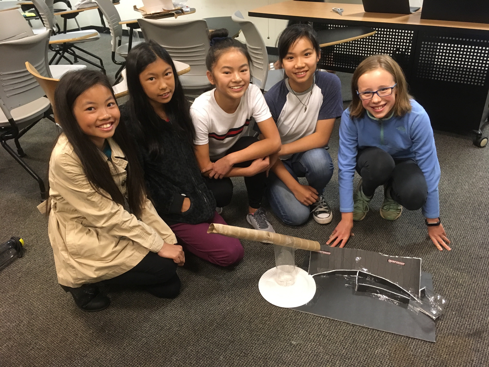

Society of Women Engineers (SWE)
Outreach Committee
I currently serve on the SWE Outreach Committee, dedicated to promoting STEM education among the younger generation. I am a SWE Science Saturday Instructor in which I lead sessions to teach science and engineering principles to middle schoolers. In SWENext Mentorship, I mentor a high school student to help navigate high school and learn about college. I will also be speaking at a panel for SWE's Mini University hosted at UC Berkeley on Nov 18, 2019.
